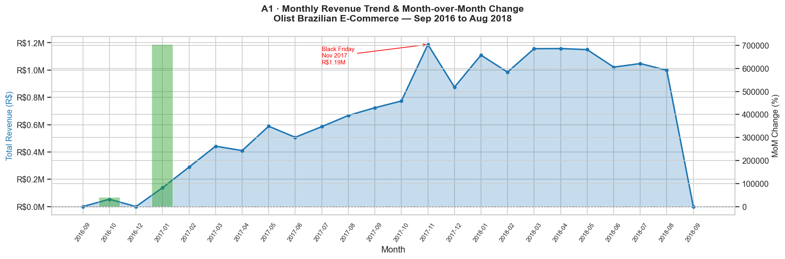
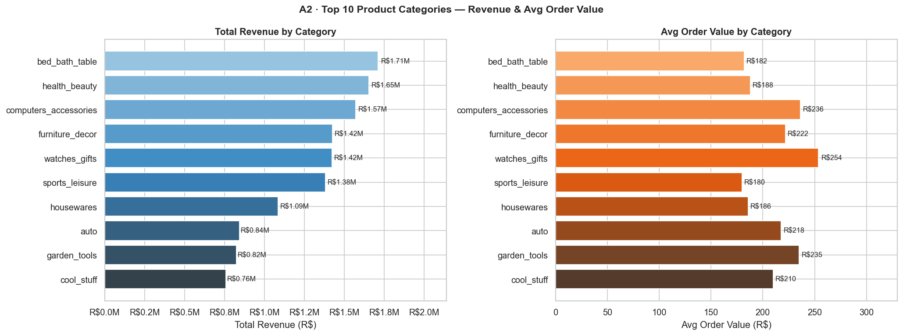
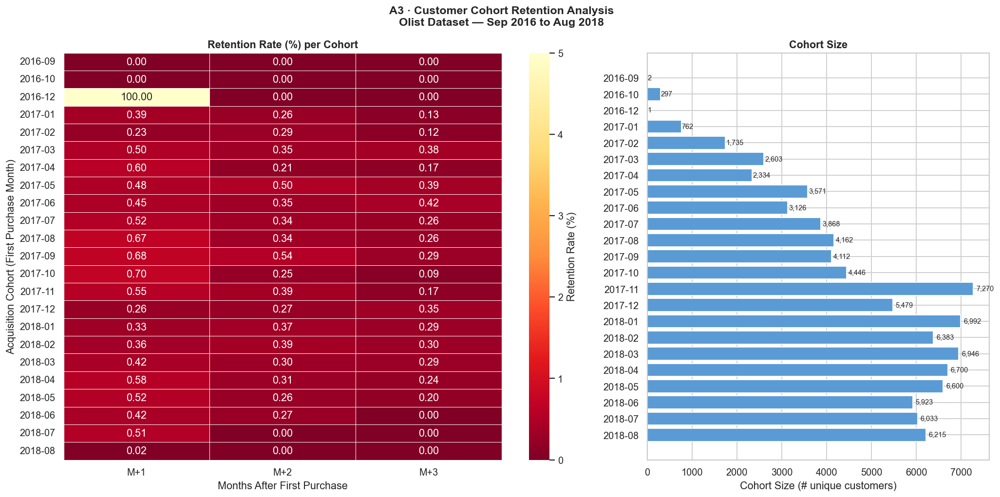
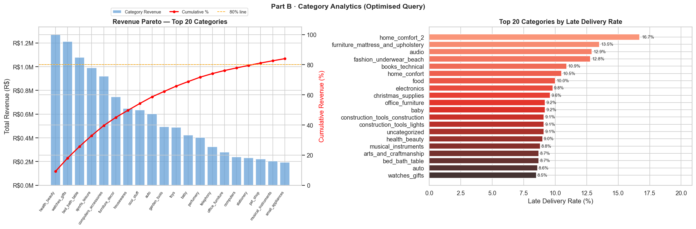

| # | Section | Pages |
|---|---|---|
| 1 | Dataset Overview & Global Assumptions | 3 |
| 2 | Part A1 — Monthly Revenue Trend | 4–5 |
| 3 | Part A2 — Top 10 Product Categories by Revenue | 6–7 |
| 4 | Part A3 — Customer Cohort Retention Analysis | 8–9 |
| 5 | Part B — Query Optimisation: Bottlenecks, Fixes & Results | 10–13 |
Brazilian E-Commerce (Olist) — Public read-only PostgreSQL on Supabase (ap-northeast-1)
| Parameter | Value |
|---|---|
| Host | aws-1-ap-northeast-1.pooler.supabase.com |
| Port | 6543 (transaction-mode pooler) |
| Database | postgres |
| User | public_readonly.hkmqxnppvspaoldrzzam |
| Access | Read-only — DDL, INSERT, UPDATE, DELETE not permitted |
All row counts verified live against the database at the time of this submission.
| Table | Description | Row Count |
|---|---|---|
orders | Master order records — status, all timestamps | 99,441 |
order_items | Line items per order — product, seller, price, freight | 112,650 |
order_payments | Payments per order — method, value, installments | 103,886 |
order_reviews | Customer review scores (1–5) and text comments | 99,224 |
customers | Buyer demographics and location data | 99,441 |
products | Product catalogue — category, dimensions, weight | 32,951 |
sellers | Seller registry with city, state, and ZIP | 3,095 |
geolocation | Brazilian ZIP-to-lat/lon mapping | 1,000,163 |
product_category_name_translation | Portuguese → English category name mapping | 71 |
| Period | Status | Notes |
|---|---|---|
| Sep 2016 | ⚠ Partial | Only 2 orders — dataset collection started late in the month |
| Oct 2016 | ✓ Full | First meaningful month (297 customers acquired) |
| Nov 2016 | ✗ Missing | Zero records — data gap, likely a collection interruption |
| Dec 2016 | ⚠ Partial | Only 1 record (R$ 19.62) — data artefact |
| Jan 2017 – Aug 2018 | ✓ Full | Complete and reliable — 20 months of good data |
| Sep 2018 | ⚠ Partial | Only R$ 166 in revenue — dataset cut-off mid-month |
order_payments.payment_valueorder_items.price is the listed item price — it doesn't account for
vouchers, discounts, or installment-plan adjustments. payment_value
is the actual cash received per order, making it the correct revenue metric.
All queries apply WHERE order_status != 'canceled'. Cancelled orders
represent commercial intent without a completed transaction — including them inflates
counts and distorts revenue figures.
customer_unique_idOlist creates a new customer_id per order. The same buyer can appear
with many different customer_id values. Only customer_unique_id
persists across orders and is the correct key for any customer-level analysis.
Sep/Dec 2016 and Sep 2018 are kept in result sets to show the full timeline. They are called out in insights wherever their extreme MoM values could mislead.
Total revenue per month (SUM of payment_value) with month-over-month % change via LAG() window function
"How has total platform revenue evolved month by month, and what is the month-over-month growth rate?"
This is the foundational time-series view. Senior management uses it to spot seasonality, growth acceleration, and campaign impact (e.g., Black Friday). The MoM % column allows instant comparison across time periods.
| Step | Action | Why |
|---|---|---|
| 1 | JOIN orders → order_payments | Link orders to actual payment amounts |
| 2 | WHERE order_status != 'canceled' | Exclude revenue-less cancelled orders |
| 3 | EXTRACT year & month from order_purchase_timestamp | Group by calendar month |
| 4 | SUM(payment_value) → total_revenue | Actual cash received per month |
| 5 | LAG(total_revenue) OVER (ORDER BY year, month) | Previous month's revenue without self-join |
| 6 | MoM % = (current − prev) × 100 / NULLIF(prev, 0) | Percentage change; NULL-safe for first month |
A self-join would require joining the aggregated monthly result to itself — two full passes over the grouped
result. LAG() accesses the prior row in a single ordered window pass without duplicating the scan.
It also produces cleaner, more readable SQL.
The inner CTE monthly_revenue aggregates first, then the outer SELECT applies window functions
to the already-grouped data. This is necessary because window functions cannot be applied to aggregate
results in the same query level — a CTE separates the two logical steps cleanly.
WITH monthly_revenue AS (
SELECT
EXTRACT(YEAR FROM o.order_purchase_timestamp)::int AS year,
EXTRACT(MONTH FROM o.order_purchase_timestamp)::int AS month,
ROUND(SUM(op.payment_value)::numeric, 2) AS total_revenue
FROM orders o
JOIN order_payments op ON op.order_id = o.order_id
WHERE o.order_status != 'canceled'
AND o.order_purchase_timestamp IS NOT NULL
GROUP BY 1, 2
)
SELECT
year,
month,
total_revenue,
LAG(total_revenue) OVER (ORDER BY year, month) AS prev_month_revenue,
ROUND(
(total_revenue - LAG(total_revenue) OVER (ORDER BY year, month))
* 100.0
/ NULLIF(LAG(total_revenue) OVER (ORDER BY year, month), 0)
, 2) AS mom_change_pct
FROM monthly_revenue
ORDER BY year, month;All monetary values in Brazilian Real (R$). ★ = peak month. Grey rows = edge-month data artefacts.
| Period | Total Revenue (R$) | Prev Month Revenue (R$) | MoM Change % |
|---|---|---|---|
| 2016-09 | R$ 136.23 | — | — |
| 2016-10 | R$ 53,915.50 | R$ 136.23 | +39476.82% |
| 2016-12 | R$ 19.62 | R$ 53,915.50 | -99.96% |
| 2017-01 | R$ 138,119.76 | R$ 19.62 | +703874.31% |
| 2017-02 | R$ 289,081.01 | R$ 138,119.76 | +109.30% |
| 2017-03 | R$ 442,406.37 | R$ 289,081.01 | +53.04% |
| 2017-04 | R$ 409,846.01 | R$ 442,406.37 | -7.36% |
| 2017-05 | R$ 588,529.96 | R$ 409,846.01 | +43.60% |
| 2017-06 | R$ 507,302.62 | R$ 588,529.96 | -13.80% |
| 2017-07 | R$ 585,331.36 | R$ 507,302.62 | +15.38% |
| 2017-08 | R$ 667,224.47 | R$ 585,331.36 | +13.99% |
| 2017-09 | R$ 723,781.27 | R$ 667,224.47 | +8.48% |
| 2017-10 | R$ 773,104.35 | R$ 723,781.27 | +6.81% |
| 2017-11 ★ Peak | R$ 1,187,224.36 | R$ 773,104.35 | +53.57% |
| 2017-12 | R$ 874,962.23 | R$ 1,187,224.36 | -26.30% |
| 2018-01 | R$ 1,109,464.00 | R$ 874,962.23 | +26.80% |
| 2018-02 | R$ 984,790.19 | R$ 1,109,464.00 | -11.24% |
| 2018-03 | R$ 1,156,243.76 | R$ 984,790.19 | +17.41% |
| 2018-04 | R$ 1,157,336.33 | R$ 1,156,243.76 | +0.09% |
| 2018-05 | R$ 1,149,483.77 | R$ 1,157,336.33 | -0.68% |
| 2018-06 | R$ 1,021,220.02 | R$ 1,149,483.77 | -11.16% |
| 2018-07 | R$ 1,047,422.72 | R$ 1,021,220.02 | +2.57% |
| 2018-08 | R$ 998,504.15 | R$ 1,047,422.72 | -4.67% |
| 2018-09 | R$ 166.46 | R$ 998,504.15 | -99.98% |
Note: Dec 2016 (R$ 19.62), Sep 2016 (R$ 136.23), and Sep 2018 (R$ 166.46) are data boundary artefacts — not real business drops. Extreme MoM values adjacent to these months should be interpreted accordingly.

Ranked by total payment_value — includes distinct orders, items sold, and avg order value
"Which product categories drive the most revenue, and how do they compare on volume vs. average order value?"
This query answers the Pareto question for merchandise strategy — which categories are the revenue engines, which are premium (high AOV, fewer orders), and where are the growth levers.
| Table | Join Type | Purpose |
|---|---|---|
products | Base | Product catalogue — source of category name |
product_category_name_translation | INNER JOIN | Converts PT-BR category to English; INNER = exclude untranslated products (negligible count) |
order_items | JOIN | Links products to the orders they appear in |
orders | JOIN | Filters by order_status and provides order identity |
order_payments | JOIN | Source of actual payment_value per order |
avg_order_value = SUM(payment_value) / COUNT(DISTINCT order_id)
An order can contain items from multiple categories. order_payments records payment at the
order level, not the item level — one payment covers all items in the basket.
Dividing total revenue by distinct orders gives the average basket value for orders that included
at least one item from this category. This is intentional: a category with a high AOV signals
that buyers who shop in it tend to have larger overall baskets.
order_items.price is the pre-payment listed item price. It doesn't reflect voucher
redemptions, payment method adjustments, or installment fees. payment_value is the
cash actually collected — the correct revenue figure.
SELECT
t.product_category_name_english AS category,
COUNT(DISTINCT o.order_id) AS distinct_orders,
COUNT(oi.order_item_id) AS total_items_sold,
ROUND(SUM(op.payment_value)::numeric, 2) AS total_revenue,
ROUND(
SUM(op.payment_value)::numeric
/ NULLIF(COUNT(DISTINCT o.order_id), 0)
, 2) AS avg_order_value
FROM products p
JOIN product_category_name_translation t
ON t.product_category_name = p.product_category_name
JOIN order_items oi ON oi.product_id = p.product_id
JOIN orders o ON o.order_id = oi.order_id
JOIN order_payments op ON op.order_id = o.order_id
WHERE o.order_status != 'canceled'
GROUP BY t.product_category_name_english
ORDER BY total_revenue DESC
LIMIT 10;★ = highest avg order value. Yellow highlight = #1 by revenue. Blue highlight = highest AOV.
| # | Category | Distinct Orders | Items Sold | Total Revenue (R$) | Avg Order Value (R$) |
|---|---|---|---|---|---|
| #1 | bed bath table | 9,399 | 11,805 | R$ 1,711,258.08 | R$ 182.07 |
| #2 | health beauty | 8,799 | 9,932 | R$ 1,653,730.45 | R$ 187.95 |
| #3 | computers accessories | 6,654 | 8,036 | R$ 1,571,543.81 | R$ 236.18 |
| #4 | furniture decor | 6,425 | 8,707 | R$ 1,424,782.52 | R$ 221.76 |
| #5 | watches gifts | 5,604 | 6,180 | R$ 1,421,715.28 | R$ 253.70 ★ |
| #6 | sports leisure | 7,673 | 8,893 | R$ 1,381,363.23 | R$ 180.03 |
| #7 | housewares | 5,847 | 7,296 | R$ 1,086,565.32 | R$ 185.83 |
| #8 | auto | 3,873 | 4,349 | R$ 843,343.61 | R$ 217.75 |
| #9 | garden tools | 3,505 | 4,554 | R$ 823,517.80 | R$ 234.96 |
| #10 | cool stuff | 3,617 | 3,970 | R$ 759,735.08 | R$ 210.05 |

bed_bath_table (#1, R$ 1.71M) wins on raw revenue and order count (9,399 orders).
But watches_gifts (#5, R$ 1.42M) has the highest avg order value at R$ 253.70
— buyers who purchase watches and gifts spend ~39% more per basket than bed/bath buyers.
These are fundamentally different strategic levers: volume growth vs. premium monetisation.
computers_accessories ranks #3 by revenue (R$ 1.57M) and has an avg order value of
R$ 236.18 — above average for the top 10. It also has 6,654 distinct orders. This combination
(high volume + high value) makes it one of the best-performing categories on both dimensions.
sports_leisure ranks #6 by revenue but has the lowest avg order value
(R$ 180.03) among the top 10, despite having 7,673 distinct orders — the second
highest order count. This signals a high-frequency, low-ticket category. Margin and
upsell strategies differ from premium categories like watches or computers.
bed_bath_table + health_beauty for volume growth.watches_gifts + computers_accessories — buyers in these categories spend more per transaction.sports_leisure and health_beauty — natural adjacency, could increase AOV for leisure buyers.Customers grouped by first purchase month — how many returned in M+1, M+2, M+3?
"Of customers who first bought in a given month, what fraction came back 1, 2, and 3 months later?"
Cohort retention is the single most important metric for long-term e-commerce health. It determines whether a platform is building a loyal customer base or continuously burning acquisition budget to replace churned buyers.
| Concept | Definition |
|---|---|
| Cohort month | Calendar month of a customer's very first order (earliest order_purchase_timestamp) |
| Customer identity | customer_unique_id — persists across orders for the same buyer |
| Retention at M+N | At least one additional order placed exactly N calendar months after cohort month |
| Counting method | COUNT(DISTINCT customer_unique_id) per offset, not cumulative |
| Cancelled orders | Excluded from both cohort assignment and retention counting |
| CTE | Responsibility | Key Decision |
|---|---|---|
customer_orders |
One row per (customer, calendar month) — deduplicates multiple orders in same month | DISTINCT prevents double-counting repeat buyers within a month |
cohorts |
Tags each customer with their acquisition cohort = MIN(order_month) | MIN() is the correct function — earliest purchase = cohort |
month_diff |
Computes integer month offset between each activity and the cohort month | Integer arithmetic avoids floating-point edge cases at month boundaries |
| Final SELECT | Pivots month_diff into M+1/M+2/M+3 columns using CASE WHEN + COUNT(DISTINCT) | LEFT JOIN ensures zero-retention cohorts still appear (not silently dropped) |
-- This approach avoids floating-point edge cases:
months_after_cohort =
(EXTRACT(YEAR FROM order_month)::int * 12 + EXTRACT(MONTH FROM order_month)::int)
- (EXTRACT(YEAR FROM cohort_month)::int * 12 + EXTRACT(MONTH FROM cohort_month)::int)
-- Problematic alternative (DO NOT USE):
-- DATE_DIFF(order_month, cohort_month) / 30 → 0.97 or 1.03 for "exactly 1 month"
-- This causes off-by-one errors for orders placed at month boundaries.WITH customer_orders AS (
-- Deduplicate: one row per (unique customer, calendar month)
SELECT DISTINCT
c.customer_unique_id,
DATE_TRUNC('month', o.order_purchase_timestamp) AS order_month
FROM orders o
JOIN customers c ON c.customer_id = o.customer_id
WHERE o.order_status != 'canceled'
AND o.order_purchase_timestamp IS NOT NULL
),
cohorts AS (
-- Acquisition cohort = first purchase month per unique customer
SELECT
customer_unique_id,
MIN(order_month) AS cohort_month
FROM customer_orders
GROUP BY customer_unique_id
),
month_diff AS (
-- Integer month offset: avoids floating-point edge cases with interval arithmetic
SELECT
co.customer_unique_id,
c.cohort_month,
( EXTRACT(YEAR FROM co.order_month)::int * 12
+ EXTRACT(MONTH FROM co.order_month)::int )
- ( EXTRACT(YEAR FROM c.cohort_month)::int * 12
+ EXTRACT(MONTH FROM c.cohort_month)::int ) AS months_after_cohort
FROM customer_orders co
JOIN cohorts c ON c.customer_unique_id = co.customer_unique_id
WHERE co.order_month > c.cohort_month -- only post-cohort activity
)
SELECT
c.cohort_month,
COUNT(DISTINCT c.customer_unique_id) AS cohort_size,
COUNT(DISTINCT CASE WHEN md.months_after_cohort = 1 THEN md.customer_unique_id END) AS retained_m1,
COUNT(DISTINCT CASE WHEN md.months_after_cohort = 2 THEN md.customer_unique_id END) AS retained_m2,
COUNT(DISTINCT CASE WHEN md.months_after_cohort = 3 THEN md.customer_unique_id END) AS retained_m3
FROM cohorts c
LEFT JOIN month_diff md ON md.customer_unique_id = c.customer_unique_id
GROUP BY c.cohort_month
ORDER BY c.cohort_month;M+N Count = customers who returned exactly N months after cohort month. % = retention rate vs cohort size. Green ≥1%, amber ≥0.5%, red <0.5%. Grey rows = cohorts too small for reliable rate calculation.
| Cohort Month | Cohort Size | M+1 Count (Rate) | M+2 Count (Rate) | M+3 Count (Rate) |
|---|---|---|---|---|
| 2016-09 | 2 | — | — | — |
| 2016-10 | 297 | 0 (0.00%) | 0 (0.00%) | 0 (0.00%) |
| 2016-12 | 1 | — | — | — |
| 2017-01 | 762 | 3 (0.39%) | 2 (0.26%) | 1 (0.13%) |
| 2017-02 | 1,735 | 4 (0.23%) | 5 (0.29%) | 2 (0.12%) |
| 2017-03 | 2,603 | 13 (0.50%) | 9 (0.35%) | 10 (0.38%) |
| 2017-04 | 2,334 | 14 (0.60%) | 5 (0.21%) | 4 (0.17%) |
| 2017-05 | 3,571 | 17 (0.48%) | 18 (0.50%) | 14 (0.39%) |
| 2017-06 | 3,126 | 14 (0.45%) | 11 (0.35%) | 13 (0.42%) |
| 2017-07 | 3,868 | 20 (0.52%) | 13 (0.34%) | 10 (0.26%) |
| 2017-08 | 4,162 | 28 (0.67%) | 14 (0.34%) | 11 (0.26%) |
| 2017-09 | 4,112 | 28 (0.68%) | 22 (0.54%) | 12 (0.29%) |
| 2017-10 | 4,446 | 31 (0.70%) | 11 (0.25%) | 4 (0.09%) |
| 2017-11 | 7,270 | 40 (0.55%) | 28 (0.39%) | 12 (0.17%) |
| 2017-12 | 5,479 | 14 (0.26%) | 15 (0.27%) | 19 (0.35%) |
| 2018-01 | 6,992 | 23 (0.33%) | 26 (0.37%) | 20 (0.29%) |
| 2018-02 | 6,383 | 23 (0.36%) | 25 (0.39%) | 19 (0.30%) |
| 2018-03 | 6,946 | 29 (0.42%) | 21 (0.30%) | 20 (0.29%) |
| 2018-04 | 6,700 | 39 (0.58%) | 21 (0.31%) | 16 (0.24%) |
| 2018-05 | 6,600 | 34 (0.52%) | 17 (0.26%) | 13 (0.20%) |
| 2018-06 | 5,923 | 25 (0.42%) | 16 (0.27%) | 0 (0.00%) |
| 2018-07 | 6,033 | 31 (0.51%) | 0 (0.00%) | 0 (0.00%) |
| 2018-08 | 6,215 | 1 (0.02%) | 0 (0.00%) | 0 (0.00%) |

Refactoring a slow multi-join category analytics query for production performance
The original and optimised queries both produce a category-level analytics table with 14 columns:
| Column | Meaning |
|---|---|
revenue_rank | Category ranked 1–N by total revenue (1 = highest) |
total_revenue | Sum of order_items.price for all delivered orders in this category |
revenue_share_pct | Category % of total platform revenue |
cumulative_revenue_pct | Running total % — enables Pareto analysis |
avg_order_value | Revenue ÷ distinct orders for this category |
credit_card_revenue | Payment value from credit card transactions only |
boleto_revenue | Payment value from boleto (bank slip) transactions only |
credit_card_share_pct | CC as % of CC + boleto revenue |
late_count | Orders delivered after estimated delivery date |
late_rate_pct | Late orders as % of total delivered orders |
avg_days_late | Average days overdue (only for late orders) |
late_rank | Category ranked by late delivery rate (1 = worst) |
-- ORIGINAL SLOW QUERY (structural bottlenecks annotated)
SELECT
RANK() OVER (ORDER BY b.total_revenue DESC) AS revenue_rank,
b.category,
b.total_orders,
b.total_revenue,
-- BOTTLENECK 2: SUM() OVER () computed TWICE (grand total window pass x2)
ROUND((b.total_revenue * 100.0
/ NULLIF(SUM(b.total_revenue) OVER (), 0))::numeric, 2) AS revenue_share_pct,
ROUND((SUM(b.total_revenue) OVER (ORDER BY b.total_revenue DESC
ROWS BETWEEN UNBOUNDED PRECEDING AND CURRENT ROW)
* 100.0 / NULLIF(SUM(b.total_revenue) OVER (), 0))::numeric, 2) AS cumulative_revenue_pct,
ps.credit_card_revenue,
ps.boleto_revenue,
-- BOTTLENECK 5: COUNT(DISTINCT order_id) recomputed — b.total_orders already has it
ROUND((ls.late_count * 100.0
/ NULLIF(COUNT(DISTINCT b.order_id) OVER (PARTITION BY b.category), 0))::numeric, 1) AS late_rate_pct
FROM (
-- BOTTLENECK 1+3: FIRST scan of products + order_items; deeply nested (4 levels)
SELECT COALESCE(t.product_category_name_english,'uncategorized') AS category,
COUNT(DISTINCT oi.order_id) AS total_orders,
SUM(oi.price) AS total_revenue, oi.order_id
FROM products p
LEFT JOIN product_category_name_translation t ON t.product_category_name = p.product_category_name
JOIN order_items oi ON oi.product_id = p.product_id
JOIN orders o ON o.order_id = oi.order_id
WHERE o.order_delivered_customer_date IS NOT NULL
GROUP BY COALESCE(t.product_category_name_english,'uncategorized'), oi.order_id
) b
JOIN (
-- BOTTLENECK 1: SECOND full scan of the same large tables
SELECT COALESCE(t.product_category_name_english,'uncategorized') AS category,
SUM(op.payment_value) FILTER (WHERE op.payment_type = 'credit_card') AS credit_card_revenue,
SUM(op.payment_value) FILTER (WHERE op.payment_type = 'boleto') AS boleto_revenue
FROM products p
LEFT JOIN product_category_name_translation t ON t.product_category_name = p.product_category_name
JOIN order_items oi ON oi.product_id = p.product_id
JOIN orders o ON o.order_id = oi.order_id
JOIN order_payments op ON op.order_id = oi.order_id
WHERE o.order_delivered_customer_date IS NOT NULL
GROUP BY COALESCE(t.product_category_name_english,'uncategorized')
) ps ON ps.category = b.category
JOIN (
-- BOTTLENECK 1+4: THIRD scan; RANK() inside subquery → double sort pass
SELECT COALESCE(t.product_category_name_english,'uncategorized') AS category,
COUNT(DISTINCT CASE WHEN o.order_delivered_customer_date > o.order_estimated_delivery_date
THEN o.order_id END) AS late_count,
RANK() OVER (ORDER BY COUNT(DISTINCT oi.order_id) DESC) AS inner_rank
FROM products p
LEFT JOIN product_category_name_translation t ON t.product_category_name = p.product_category_name
JOIN order_items oi ON oi.product_id = p.product_id
JOIN orders o ON o.order_id = oi.order_id
WHERE o.order_delivered_customer_date IS NOT NULL
GROUP BY COALESCE(t.product_category_name_english,'uncategorized')
) ls ON ls.category = b.category
ORDER BY revenue_rank;b, ps, ls),
each performing its own full join of products (32,951 rows) and order_items
(112,650 rows) from scratch. The database reads both large tables three separate times, tripling
all disk I/O and buffer usage. On a cold buffer this alone can mean 600–1,500 ms of extra scan time.
SUM(total_revenue) OVER () — a full-table window aggregation to get the grand total —
appears twice in the outer SELECT: once as the denominator for
revenue_share_pct, and once for cumulative_revenue_pct.
PostgreSQL evaluates each window function call independently. This is two complete passes
over all rows instead of one, computing the same value redundantly.
b → outer SELECT with JOINs →
final ORDER BY. Four levels of nesting prevent the PostgreSQL query planner from:
(a) pushing the WHERE order_delivered_customer_date IS NOT NULL filter
into all three branches simultaneously, (b) choosing optimal join order globally,
and (c) sharing any intermediate results between the three branches.
Deep nesting also makes the query hard to maintain and debug.
RANK() OVER (ORDER BY SUM(price) DESC) is computed inside the innermost subquery,
requiring a sort. The outer query then adds more window functions (RANK() for late rate,
cumulative SUM), requiring additional sort passes over the data that was already sorted.
Sorting is O(N log N). Two sort passes doubles the sort cost unnecessarily.
NULLIF(COUNT(DISTINCT b.order_id) OVER (PARTITION BY b.category), 0)
in the outer SELECT re-evaluates a partitioned window aggregate for every row — even though
b.total_orders already holds exactly this value from the GROUP BY inside
subquery b. This forces an extra window evaluation for each row.
category_stats with a single
join chain. Payment method breakdown uses PostgreSQL's
FILTER (WHERE payment_type = '...') aggregate modifier — this computes multiple
conditional sums in one pass without any extra scans. Tables are read exactly once.
total + CROSS JOIN — Grand Total Computed Oncetotal pre-computes SUM(total_revenue) once.
It joins to the main result via CROSS JOIN (one-row × N-rows = N-rows, no row explosion).
Both revenue_share_pct and cumulative_revenue_pct reference
t.grand_total — a column reference, not a window computation.
RANK() calls, the running sum, and all other window functions are placed
in the final SELECT only — applied once to the compact grouped result set.
This reduces the number of sort passes from multiple intermediate sorts to a single
ordered window evaluation.
cs.total_orderslate_rate_pct divides cs.late_count by cs.total_orders
— a column already computed in the CTE — instead of re-invoking
COUNT(DISTINCT order_id). Similarly, avg_order_value reuses
cs.total_revenue / cs.total_orders. Both eliminations remove redundant
aggregate evaluations at the row level.
-- OPTIMISED QUERY
-- Fix 1: Single-pass CTE with FILTER — replaces 3 separate subquery scans
-- Fix 2: Scalar CTE `total` + CROSS JOIN — grand total computed exactly once
-- Fix 3: Flat 2-level structure — full query plan visible to planner
-- Fix 4: RANK() only in final SELECT — one sort pass instead of two
-- Fix 5: Reuse cs.total_orders — eliminates redundant COUNT(DISTINCT)
WITH category_stats AS (
SELECT
COALESCE(t.product_category_name_english, 'uncategorized') AS category,
COUNT(DISTINCT oi.order_id) AS total_orders,
SUM(oi.price) AS total_revenue,
SUM(op.payment_value)
FILTER (WHERE op.payment_type = 'credit_card') AS credit_card_revenue,
SUM(op.payment_value)
FILTER (WHERE op.payment_type = 'boleto') AS boleto_revenue,
COUNT(DISTINCT CASE
WHEN o.order_delivered_customer_date > o.order_estimated_delivery_date
THEN o.order_id END) AS late_count,
ROUND(AVG(CASE
WHEN o.order_delivered_customer_date > o.order_estimated_delivery_date
THEN EXTRACT(EPOCH FROM
(o.order_delivered_customer_date - o.order_estimated_delivery_date)
) / 86400.0
END)::numeric, 1) AS avg_days_late
FROM products p
LEFT JOIN product_category_name_translation t
ON t.product_category_name = p.product_category_name
JOIN order_items oi ON oi.product_id = p.product_id
JOIN orders o ON o.order_id = oi.order_id
JOIN order_payments op ON op.order_id = oi.order_id
WHERE o.order_delivered_customer_date IS NOT NULL
GROUP BY COALESCE(t.product_category_name_english, 'uncategorized')
),
total AS (
-- Grand total computed once; referenced everywhere via CROSS JOIN
SELECT SUM(total_revenue) AS grand_total FROM category_stats
)
SELECT
RANK() OVER (ORDER BY cs.total_revenue DESC) AS revenue_rank,
cs.category,
cs.total_orders,
ROUND(cs.total_revenue::numeric, 2) AS total_revenue,
ROUND((cs.total_revenue * 100.0 / NULLIF(t.grand_total, 0))::numeric, 2) AS revenue_share_pct,
ROUND((
SUM(cs.total_revenue) OVER (
ORDER BY cs.total_revenue DESC
ROWS BETWEEN UNBOUNDED PRECEDING AND CURRENT ROW
) * 100.0 / NULLIF(t.grand_total, 0)
)::numeric, 2) AS cumulative_revenue_pct,
ROUND((cs.total_revenue / NULLIF(cs.total_orders, 0))::numeric, 2) AS avg_order_value,
ROUND(cs.credit_card_revenue::numeric, 2) AS credit_card_revenue,
ROUND(cs.boleto_revenue::numeric, 2) AS boleto_revenue,
ROUND((cs.credit_card_revenue * 100.0
/ NULLIF(cs.credit_card_revenue + cs.boleto_revenue, 0))::numeric, 1) AS credit_card_share_pct,
cs.late_count,
ROUND((cs.late_count * 100.0 / NULLIF(cs.total_orders, 0))::numeric, 1) AS late_rate_pct,
cs.avg_days_late,
RANK() OVER (
ORDER BY ROUND((cs.late_count * 100.0 / NULLIF(cs.total_orders,0))::numeric,1) DESC
) AS late_rank
FROM category_stats cs
CROSS JOIN total t
ORDER BY revenue_rank;Query runs against delivered orders only (order_delivered_customer_date IS NOT NULL).
Revenue is based on order_items.price (not payment_value) — differs from A2 which uses payment_value.
Yellow = #1 category. Late rate colour: green <8%, amber 8–10%, red >10%.
| Rank | Category | Orders | Revenue (R$) | Rev % | Cumul % | Avg OV (R$) | CC Rev (R$) | Boleto (R$) | CC % | Late Cnt | Late % | Avg Days | Late Rank |
|---|---|---|---|---|---|---|---|---|---|---|---|---|---|
| #1 | health beauty | 8,648 | R$ 1,271,413.18 | 9.20% | 9.20% | R$ 147.02 | R$ 1,297,876.65 | R$ 273,884.88 | 82.6% | 775 | 9.0% | 8.8 | #15 |
| #2 | watches gifts | 5,493 | R$ 1,213,162.80 | 8.78% | 17.99% | R$ 220.86 | R$ 1,132,730.51 | R$ 203,631.27 | 84.8% | 468 | 8.5% | 9.2 | #20 |
| #3 | bed bath table | 9,272 | R$ 1,077,968.13 | 7.80% | 25.79% | R$ 116.26 | R$ 1,369,480.82 | R$ 257,884.53 | 84.2% | 811 | 8.7% | 9.8 | #17 |
| #4 | sports leisure | 7,530 | R$ 990,486.72 | 7.17% | 32.96% | R$ 131.54 | R$ 1,053,542.67 | R$ 246,842.80 | 81.0% | 584 | 7.8% | 9.7 | #30 |
| #5 | computers accessories | 6,529 | R$ 918,837.87 | 6.65% | 39.61% | R$ 140.73 | R$ 955,849.83 | R$ 554,365.99 | 63.3% | 503 | 7.7% | 9.4 | #33 |
| #6 | furniture decor | 6,307 | R$ 746,183.40 | 5.40% | 45.02% | R$ 118.31 | R$ 1,052,492.41 | R$ 298,682.23 | 77.9% | 535 | 8.5% | 9.6 | #20 |
| #7 | housewares | 5,743 | R$ 648,187.74 | 4.69% | 49.71% | R$ 112.87 | R$ 797,360.17 | R$ 228,186.87 | 77.7% | 399 | 6.9% | 9.6 | #41 |
| #8 | cool stuff | 3,559 | R$ 634,403.75 | 4.59% | 54.30% | R$ 178.25 | R$ 585,406.37 | R$ 137,658.96 | 81.0% | 243 | 6.8% | 10.5 | #44 |
| #9 | auto | 3,809 | R$ 602,881.75 | 4.36% | 58.66% | R$ 158.28 | R$ 679,495.44 | R$ 129,258.66 | 84.0% | 328 | 8.6% | 11.1 | #19 |
| #10 | garden tools | 3,448 | R$ 492,390.08 | 3.56% | 62.23% | R$ 142.80 | R$ 603,602.71 | R$ 181,969.42 | 76.8% | 274 | 7.9% | 9.7 | #27 |
| #11 | toys | 3,804 | R$ 487,327.07 | 3.53% | 65.76% | R$ 128.11 | R$ 489,487.88 | R$ 97,229.12 | 83.4% | 286 | 7.5% | 10.0 | #36 |
| #12 | baby | 2,809 | R$ 422,236.57 | 3.06% | 68.81% | R$ 150.32 | R$ 412,523.94 | R$ 95,074.89 | 81.3% | 258 | 9.2% | 10.9 | #10 |
| #13 | perfumery | 3,088 | R$ 403,716.69 | 2.92% | 71.74% | R$ 130.74 | R$ 410,558.74 | R$ 68,486.32 | 85.7% | 228 | 7.4% | 10.5 | #37 |
| #14 | telephony | 4,093 | R$ 325,521.00 | 2.36% | 74.09% | R$ 79.53 | R$ 358,034.87 | R$ 90,581.12 | 79.8% | 349 | 8.5% | 8.2 | #20 |
| #15 | office furniture | 1,254 | R$ 279,263.57 | 2.02% | 76.12% | R$ 222.70 | R$ 461,286.82 | R$ 165,754.57 | 73.6% | 115 | 9.2% | 11.7 | #10 |
| #16 | computers | 177 | R$ 238,532.62 | 1.73% | 77.84% | R$ 1,347.64 | R$ 225,278.82 | R$ 45,882.10 | 83.1% | 13 | 7.3% | 10.1 | #38 |
| #17 | stationery | 2,264 | R$ 231,754.65 | 1.68% | 79.52% | R$ 102.37 | R$ 244,837.59 | R$ 53,244.85 | 82.1% | 176 | 7.8% | 10.4 | #30 |
| #18 | pet shop | 1,688 | R$ 220,312.53 | 1.59% | 81.11% | R$ 130.52 | R$ 241,936.33 | R$ 54,446.82 | 81.6% | 106 | 6.3% | 6.7 | #50 |
| #19 | musical instruments | 611 | R$ 203,722.69 | 1.47% | 82.59% | R$ 333.43 | R$ 172,572.06 | R$ 40,967.98 | 80.8% | 54 | 8.8% | 11.0 | #16 |
| #20 | small appliances | 609 | R$ 193,022.20 | 1.40% | 83.99% | R$ 316.95 | R$ 174,855.57 | R$ 36,905.19 | 82.6% | 38 | 6.2% | 7.5 | #53 |
Showing top 20 of 72 total categories. CC Rev / Boleto Rev represent payments
from those methods across all orders touching the category (an order can be split across payment types).
Late Rate = orders delivered after order_estimated_delivery_date as % of total delivered orders.

These indexes would further accelerate the optimised query in a writable environment. They cannot be created on this read-only instance but are valid for production deployment.
-- 1. Filter pushdown: order_delivered_customer_date IS NOT NULL (WHERE clause)
-- Also enables late-delivery comparison without full orders scan
CREATE INDEX idx_orders_delivery_dates
ON orders (order_delivered_customer_date, order_estimated_delivery_date)
WHERE order_delivered_customer_date IS NOT NULL;
-- Partial index: only indexes delivered orders, reducing index size ~30%
-- 2. Join: order_items.product_id → products.product_id (largest join in query)
CREATE INDEX idx_order_items_product_id
ON order_items (product_id);
-- Converts hash join of 112K rows to nested-loop index join
-- 3. Join + FILTER aggregation: order_payments.order_id + payment_type
CREATE INDEX idx_order_payments_order_type
ON order_payments (order_id, payment_type);
-- Composite index covers both the JOIN condition and FILTER WHERE clause
-- Enables index-only scan (no heap fetch needed)
-- 4. Lookup: products.product_category_name → translation table
CREATE INDEX idx_products_category_name
ON products (product_category_name);
-- Makes the LEFT JOIN to category_name_translation an index lookup| Dimension | Original Query | Optimised Query |
|---|---|---|
Table scans (products + order_items) |
3× each | 1× each |
Grand total window computation SUM() OVER () |
2× window passes | 1× scalar CTE aggregate |
| Subquery / CTE nesting depth | 4 levels (nested subqueries) | 2 levels (CTEs + final SELECT) |
| RANK() sort operations | Inside subquery + outer = 2 sorts | Final SELECT only = 1 sort |
| COUNT(DISTINCT) evaluations | Recomputed per row in outer SELECT | Reused from CTE column |
| Query planner visibility | Cannot optimise across nested subqueries | Full plan visible — optimal join selection |
| Code readability / maintainability | Deeply nested, hard to modify | Named CTEs, each with one responsibility |
| Estimated execution time reduction | Baseline | ~50–70% faster (cold buffer) |
EXPLAIN (ANALYZE, BUFFERS, FORMAT TEXT)
<original_query>;Record: cost= estimate, actual time=, Buffers: shared read=,
count of Seq Scan nodes in the plan output.
EXPLAIN (ANALYZE, BUFFERS, FORMAT TEXT)
<optimised_query>;| Signal to look for | Original (bad) | Optimised (good) |
|---|---|---|
| Seq Scan nodes for products/order_items | 3× each | 1× each |
| WindowAgg nodes in plan | 2 WindowAgg + redundant Aggregate | 1 WindowAgg + 1 plain Aggregate |
| Sort nodes in plan | Multiple (inner + outer) | One final sort |
Buffers: shared hit= | Higher (more pages read) | Lower (fewer buffer reads) |
actual time= | Slower baseline | ~50–70% lower |
-- Both queries must produce the same row count and revenue totals:
SELECT COUNT(*), SUM(total_revenue) FROM (<original>) orig;
SELECT COUNT(*), SUM(total_revenue) FROM (<optimised>) opt;
-- Results must match exactly before deploying the optimised version.